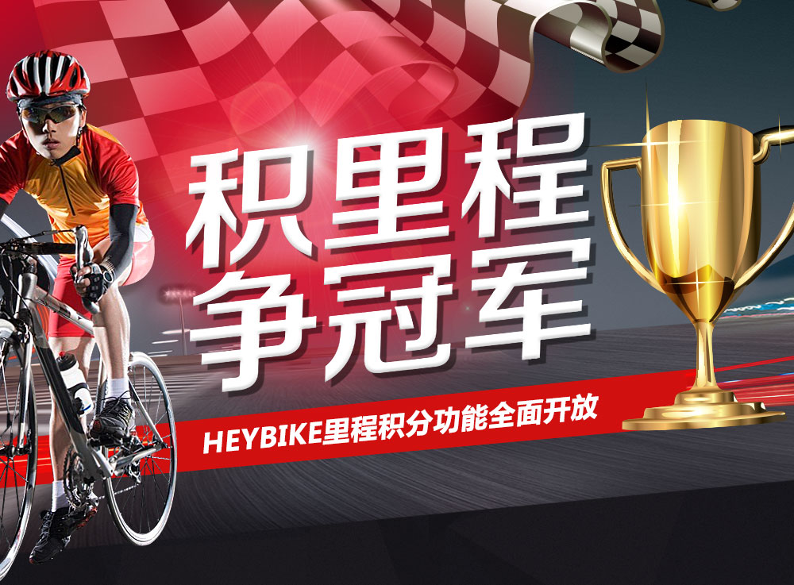
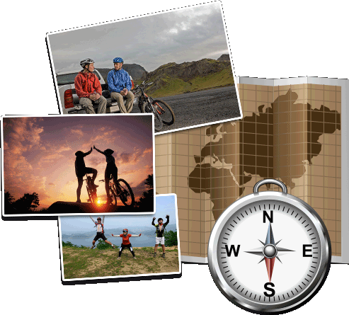
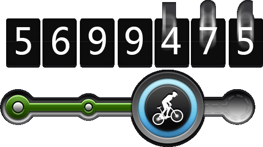
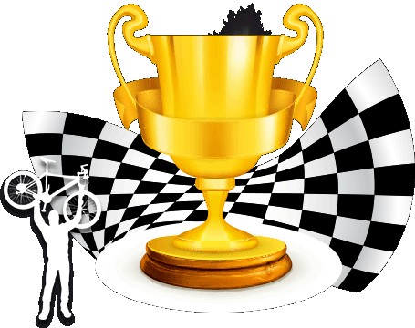
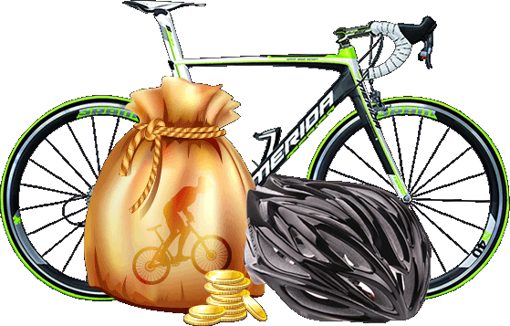

- 记下你的每一个骑行故事
-
每一次骑行，都是一个故事。
那些没去过的地方；没走过的路；没看过的风景；
还有一起列队超车的这队人，喜怒哀乐的这一程……
在路上的人，总有这么多的精彩值得铭记！
HEYBIKE现在为你量身打造个人骑行记录功能，
只要在HEYBIKE论坛报名并参加骑行联盟的活动，
就可以自动记录你的每一次骑行历程，
形成独一无二的个人骑行日志!


- 汇总俱乐部会员的骑行里程
-
HEYBIKE骑行联盟面向俱乐部提供专享空间和管理后台
你将可以和你的会员一起建设俱乐部的网上家园
发起活动、累计里程、发展会员、推荐毒物
这些将让你的俱乐部精彩纷呈,活力四射！
HEYBIKE骑行联盟定期开展俱乐部排名评选活动,
以里程数为关键指标，面向全国寻找精英俱乐部。
让我们，用实力说话！
- 发现骑行精英 打造领袖地位
-
HEYBIKE骑行联盟联合国内数十家知名俱乐部，
与16家互联网、平面、影视共享媒体资源，
挑选骑行精英竞逐全国排名，
打造骑行领域意见领袖的超然地位！
你征服过哪些险峻山川？你挑战过哪些极限数据？
你有什么特技绝活？
都晒出来吧！让大家为你惊叹！


- 公益骑行，积分兑换
-
骑行是快乐而健康的，于自己，于环境都一样。
HEYBIKE骑行联盟致力于推广骑行运动
推行积分兑换和公益骑行活动
个人或俱乐部在HEYBIKE积累的里程积分
未来将可以在HEYBIKE的积分商城
直接兑换成骑行装备
或为公益骑行活动累计里程 资助有需要的人